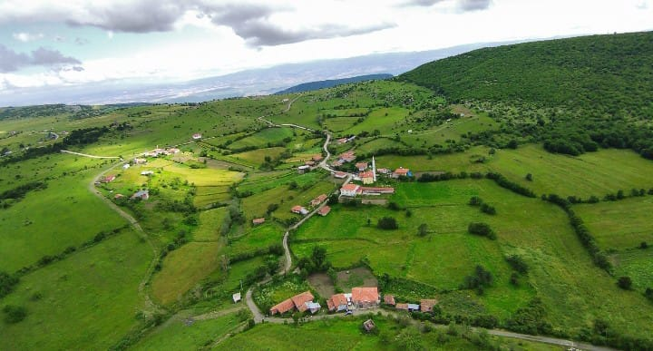
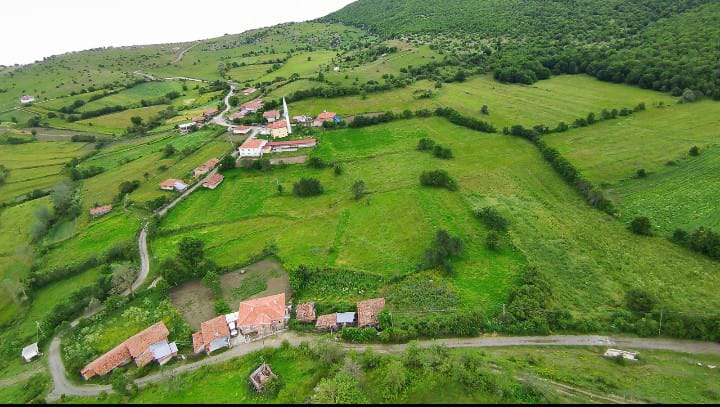
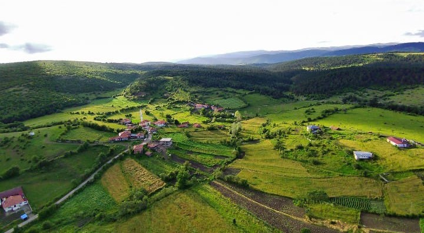
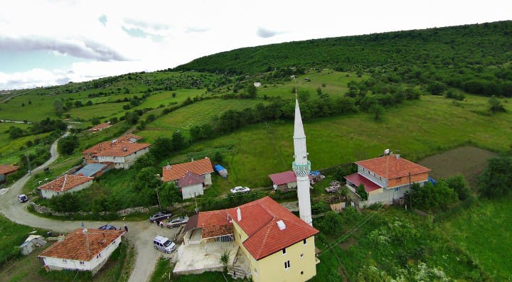
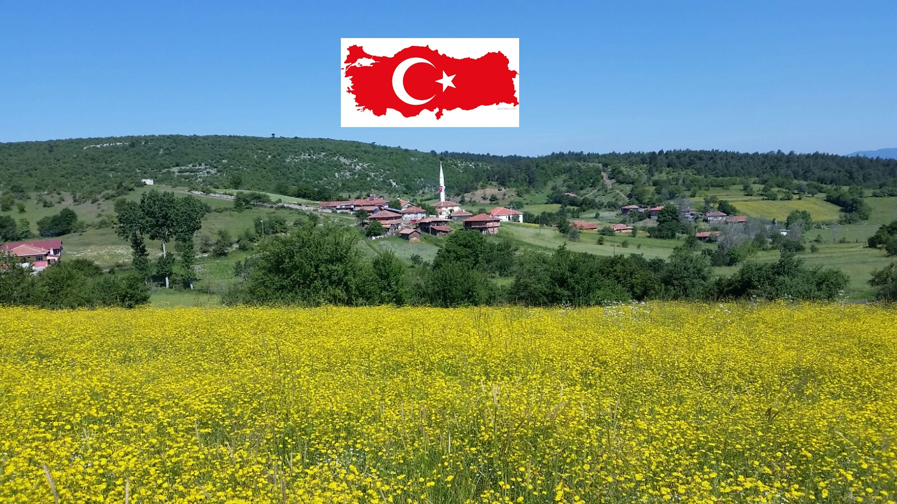

Hakkımızda
Salarkolu Köyü'nün tarihçesi, yapısı, nüfus bilgileri ve güzelliklerini keşfedin.
Tarihçe
Salarkolu Köyü, tarihi Osmanlı dönemine kadar uzanan köklü bir geçmişe sahiptir. Köyümüz, yüzyıllar boyunca doğal güzellikleri ve tarım faaliyetleri ile tanınmıştır.


Köyümüzün Yapısı
Köyümüzde geleneksel taş ve ahşap evler bulunmakta olup, modern yaşam alanları da zaman içinde eklenmiştir. Köy merkezi ve çevresindeki mahalleler düzenli bir yapı içerisindedir.


Nüfus Bilgileri
Salarkolu Köyü'nde yaklaşık 850 kişi yaşamaktadır. Nüfusun büyük bir kısmı tarım ve hayvancılıkla uğraşmaktadır.
